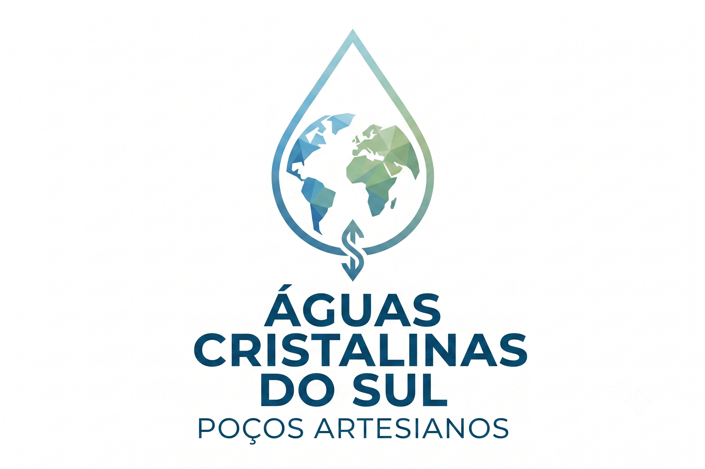
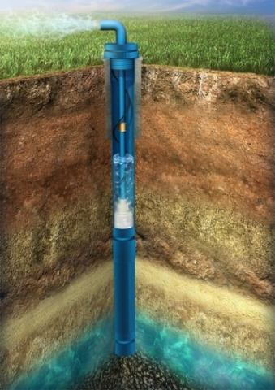
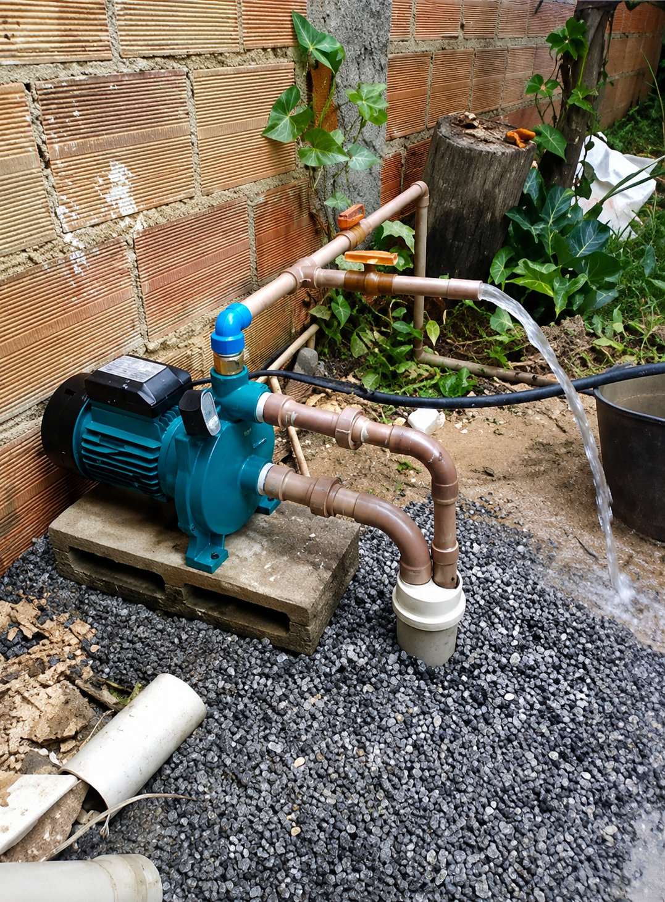

Perfuração, manutenção e limpeza de poços com atendimento profissional e foco em qualidade para residências, agronegócio e indústrias.

Execução de poços artesianos para residências, propriedades rurais, comércios e empresas, buscando uma solução eficiente para abastecimento de água.
Serviços de manutenção para melhorar o funcionamento, preservar a estrutura e aumentar a vida útil do poço, evitando paradas inesperadas.
Limpeza técnica para remover impurezas, melhorar a qualidade da água e manter o sistema em perfeitas condições sanitárias e de vazão.


A Águas Cristalinas do Sul trabalha com atenção aos detalhes, responsabilidade e compromisso em entregar soluções seguras para quem precisa de água com mais autonomia.
Atendimento profissional
Equipe técnica capacitada e pronta para orientar.
Serviços completos
Do projeto à manutenção, cuidamos de tudo.
Orçamento via WhatsApp
Agilidade no atendimento e transparência.
Experiência em poços
Anos de atuação com foco em resultados duradouros.
Transparência em cada etapa. Confira registros reais de nossas operações em campo.
Fale agora com a Águas Cristalinas do Sul pelo WhatsApp e solicite um atendimento personalizado com nossa equipe técnica.
Solicitar orçamento no WhatsApp send